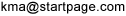

Data Protection Day: Are You Still Using a Pre-Snowden Search Engine?
Five easy ways to join the privacy revolution with StartPage and Ixquick
January 27, 2014Zeist, Netherlands: Are you still using a pre-Snowden search engine? This Privacy Day, make the switch to privacy-friendly searching. Millions already have, and so can you! Here's how:
1. REPLACE YOUR NOSY SEARCH ENGINE
Last June, Edward Snowden showed the world how intelligence agencies exploit search engines that store personal information. In response, millions switched to the World's Most Private Search Engines, StartPage.com and Ixquick.com.
 StartPage and Ixquick experienced a noticeable surge in traffic in June 2013 when Edward Snowden began leaking details of government Internet snooping programs, like PRISM. (See StartPage/Ixquick search engine query details at: https://www.startpage.com/traffic/)
StartPage and Ixquick experienced a noticeable surge in traffic in June 2013 when Edward Snowden began leaking details of government Internet snooping programs, like PRISM. (See StartPage/Ixquick search engine query details at: https://www.startpage.com/traffic/)
StartPage and Ixquick are based in Europe, where privacy is better protected by law. They don't record your identity or your searches and use no tracking cookies. Their privacy promises are third-party certified, and they use state-of-the-art encryption.
Startpage serves up anonymous Google results, and Ixquick serves up equally private search results from other search engines. Combined they serve over 5 million searches a day, making them the world's most popular alternative to the "big guys."
2. SWITCH TO A POST-SNOWDEN HOMEPAGE
Are you still using "you know who" for your homepage? Time to switch, and it's super easy to do. Just visit www.startpage.com or www.ixquick.com and click on the "Set as homepage" link just below the search box. While you're there, click the link to add them to your browser, too.
3. ADD STARTPAGE TO YOUR MOBILE DEVICES
Get all the great privacy protections of StartPage on your Android and Apple devices. Install the StartPage search app from the Play Store, Amazon, or iTunes. It's free and installs in a snap.
4. ADD A STARTPAGE OR IXQUICK SEARCH BOX TO YOUR WEBSITE
Show your website visitors you're up-to-date on privacy matters by installing a StartPage search box. They'll thank you for it! Get one here: https://www.startpage.com/eng/link-instructions.html
Ixquick has them, too: https://www.ixquick.com/eng/link-instructions.html
5. SAY "STARTPAGE IT" OR "IXQUICK IT"
Join the privacy revolution. Next time you announce a need to search the Internet, say "StartPage it!" or "Ixquick it!" Better yet, why not reference both search engines and say, "StartPage it. It's not only smarter, Ixquick and easy." Get it? :)
Happy Data Protection Day from the World's Most Private Search Engines!
About StartPage and Ixquick
StartPage and its sister Ixquick combined are the largest anonymous search engines, and the only search engines that are third-party certified. They are also the only search engines to offer a free proxy service, and consistently outscore other search engines on security measures. For more information, please see StartPage.com or Ixquick.com.
For more information contact:
U.S. Media Relations
StartPage, Ixquick and StartMail
877-434-3100 Ext: 2

International

+31-30-6971778